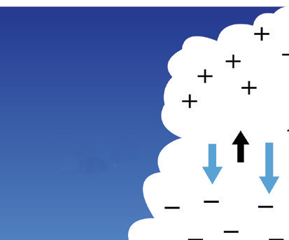
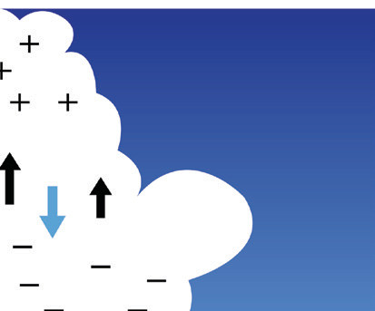
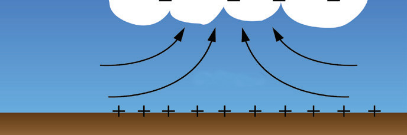
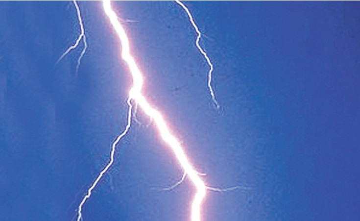

Lightning and thunderstorms
Lightning, a dramatic electrostatic phenomenon, results from charge separation within storm clouds. Ice crystals and water droplets collide, creating positive and negative charges that segregate. A stepped leader, an ionised air channel, descends from the cloud, meeting a positive charge rising from the ground. This interaction forms the return stroke, the visible lightning flash. The rapid heating of air by lightning causes its expansion, resulting in the sound waves we recognise as thunder. The process occurs in milliseconds.
Lightning is a large spark due to electrostatic discharge within a cloud, between two clouds or between a cloud and the ground. Interaction between updrafts and downdrafts in the cloud produces static charge by friction. The lower portion of the cloud becomes negatively charged, and the upper part is positively charged. The ground beneath the cloud can become positively charged by induction. Figure 1.44 shows positively and negatively charged clouds.



Figure 1.44: Positively and negatively charged clouds
As charge builds up beyond a certain limit, the insulating property of the medium between positive and negative charge centre breaks down. Hence, a large current suddenly passes, ionising the air molecules on its way, accompanied by the sudden expansion of the air. The ionisation of air results in the observed flash of light (lightning), as shown in Figure 1.45. Sudden expansion results in the booming sound (thunder) that is heard a few seconds after the flash is seen.

Figure1.45: Lightning